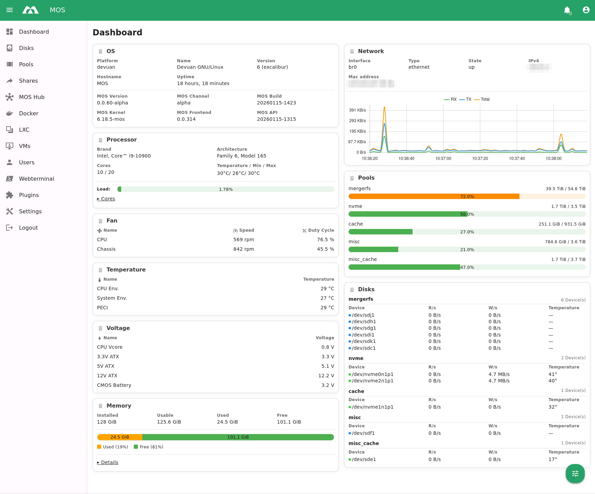

Monitoring & Status
CPU, RAM, Disks, Temperaturen, Netz – kompakt und direkt erreichbar.
Self-hosted · Schnell · Übersichtlich
Devuan‑basiert und ressourcenschonend: Web‑UI mit Monitoring, Storage & Shares, Users, Netzwerk, Benachrichtigungen, Webterminal sowie Docker, LXC, VMs – modular erweiterbar.

Kernbereiche und Schnellzugriffe in die Doku.
WebUI‑Überblick, Netzwerkstart, erste Pools, erster Container, Shares.
Boot‑Medium erstellen und loslegen. Changelog via Releases.
Settings, Cron, Logs, Updates/Rollback, Tokens, HUB & Notify.
Pools, Filesystems, SMB/NFS‑Shares, Rechte und Attribute.
Images/Container, Logs, Netzwerke, Volumes/Appdata, Compose.
Container anlegen, Snapshots/Backups, Netzwerk & Storage.
CPUs/RAM, Netzwerke, Disks, GPU/USB‑Passthrough, Snapshots.
Benutzer erstellen, Rechte & Rollen – sauber segmentiert.
REST‑API und Realtime via WebSocket für Integrationen.
CPU, RAM, Disks, Temperaturen, Netz – kompakt und direkt erreichbar.
Disks und Pools überblicken, Shares verwalten – ohne den Kontext zu verlieren.
Benutzerverwaltung, Profil, Sprache und UI-Einstellungen zentral in einer Oberfläche.
Docker, LXC und VMs im Zugriff – abhängig davon, welche MOS-Services aktiv sind.
Schnelle Checks und Aktionen direkt im Browser – ohne ständig zwischen Tools zu wechseln.
Wichtige Events in Echtzeit – mit Badge und Toaster nach Priorität.
Die Oberfläche bleibt schlank – zusätzliche Funktionen kommen modular dazu.
System- und Service-Einstellungen gebündelt: System, Netzwerk, Logs, Token und mehr.
UI-Texte per i18n sowie Hell/Dunkel und Farben – passend zu deinem Setup.
Apps & Templates aus dem MOS Hub – mit einem Klick in MOS installierbar.
Klare HTTP-Endpoints für Auth, Systeminfos, Services, Storage, User und vielem mehr.
Live-Events wie Notifications funktionieren in Echtzeit – ohne Polling-Stress.
Ideal für Automationen, eigene Tools oder externe Clients – je nach Setup.
Hinweis: Details hängen von Version/Installation ab. Die UI nutzt API-Routen unter
/api/v1
und einen Notification-WebSocket.
Transparenz, Community und Kontrolle über dein eigenes Setup.
MOS ist (und bleibt) Open Source und steht unter der GNU AGPLv3. Lizenz anzeigen
Feedback, Issues und Beiträge helfen, MOS besser zu machen. https://github.com/ich777/mos-releases
Von Homeserver bis kleines Rack – MOS passt sich an.
Projektpartner und unterstützende Organisationen
Devuan
Weblate
MOS ist eine webbasierte Verwaltungsoberfläche für Server/Systeme: Monitoring, Storage, Benutzerverwaltung, Services, Container/VMs, Notifications und Tools – als Client zur MOS-API.
Ja — ARM64 Builds sind verfügbar, aber aktuell noch experimentell.
MOS ist service‑orientiert: Dashboard, Disks/Pools/Shares, Users, Docker, LXC, VM, Webterminal und optionale Module (z.B. Hub/Remote Mounting). Sichtbarkeit richtet sich nach aktiven Services.
Übliche Deploys laufen als Web‑UI hinter HTTPS / Reverse Proxy. Die UI selbst ist statisch; sie kommuniziert mit einer MOS‑Backend‑API (z. B. /api/v1) und einem Notification‑WebSocket.
Auth erfolgt tokenbasiert; Betrieb hinter TLS und Reverse Proxy wird empfohlen. Prinzipien: Least Privilege, regelmäßige Updates und Monitoring von Logs/Notifications.
Funktionen bleiben modular: Plugins erweitern Views und API‑Funktionen. Die UI zeigt nur registrierte/aktivierte Plugins und Module an.
Updates betreffen Backend und UI getrennt. Folge dem Projekt‑Repo für Releases.
Ja, MOS ist (und bleibt) Open Source unter der GNU AGPLv3 (siehe LICENSE im Repo).
Issues, PRs und Diskussionsbeiträge über das Projekt‑Repository; für Installationsfragen sind Readme/Docs und Community‑Kanäle die erste Anlaufstelle.